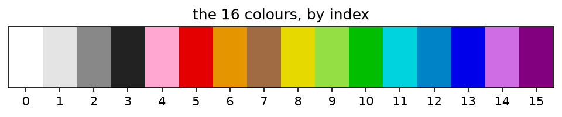

Before asking how the canvas behaves, we need to know exactly what was recorded. This chapter loads the log, looks at what one record is, lists what is odd about it, and draws the canvas from it. Nothing here is a finding about people yet; it is the ground the rest of the book stands on.
1.1 One placement is one row
import numpy as npimport polars as plimport matplotlib.pyplot as pltimport rplace17 as rd = r.load() # sorted by time; the 3 rows without coordinates are dropped (see below)d.head()
shape: (5, 5)
t_us
user_id
x
y
color
i64
i32
i16
i16
i8
1490118935548000
413864
500
504
2
1490118947515000
413864
508
503
2
1490118959619000
413864
509
504
2
1490118973689000
413864
509
503
2
1490118985251000
413864
509
502
2
Each row is one pixel placement:
t_us: the time, in microseconds since 1970 (UTC). The release records milliseconds.
user_id: who placed it. The release gives a hashed account id; we replaced each hash by a small integer.
x, y: where, with (0, 0) at the top left.
color: which of the 16 colours, as an index into the palette.
pal = r.palette()fig, ax = plt.subplots(figsize=(8, 0.9))ax.imshow(r.palette_rgb()[None, :, :], aspect="auto")ax.set_xticks(range(16)); ax.set_yticks([])ax.set_title("the 16 colours, by index")plt.show()

n_rows, n_users = d.height, d["user_id"].n_unique()print(f"{n_rows:,} placements by {n_users:,} accounts")
16,567,564 placements by 1,166,938 accounts
So there are 16,567,564 placements by 1,166,938 accounts, on average 14.2 placements each. How that average hides a very uneven spread is the subject of Chapter 2.
1.2 What is odd about the log
A dataset should be checked before it is trusted. These checks compare the log with what the rules say should be possible.
full = r.load(drop_missing=False)dup = full.height - full.unique().heightmissing = full["x"].null_count()edge = d.filter((pl.col("x") ==1000) | (pl.col("y") ==1000)).heightprint(f"rows without coordinates: {missing}")print(f"exact duplicate rows: {dup}")print(f"x or y equal to 1000: {edge:,} (the canvas is 1000 x 1000, so 0..999)")print(f"x range {d['x'].min()}..{d['x'].max()}, y range {d['y'].min()}..{d['y'].max()}")
rows without coordinates: 3
exact duplicate rows: 304
x or y equal to 1000: 3,256 (the canvas is 1000 x 1000, so 0..999)
x range 0..1000, y range 0..1000
3 rows have no coordinates or colour. They are dated weeks after the event; we drop them.
304 rows are exact duplicates (same time, account, pixel and colour). We keep them, because we cannot tell a logging artefact from a real double click.
3,256 rows sit at coordinate 1000, one past the edge of a 1000 × 1000 canvas (whose coordinates would run 0 to 999). We keep them, so in the rest of the book the canvas is 1001 × 1001 pixels, coordinates 0 to 1000. The difference matters only for distances near the corners (Chapter 4).
How many placements and accounts there are depends on these choices. Papers using the same release report slightly different totals for this reason, so here are ours at each step:
steps = [("every row in the release", full), ("with coordinates", d), ("from the launch hour on", d.filter(pl.col("t_us") >= r.LAUNCH_US))]r.table(pl.DataFrame([{"rows": label, "placements": f"{x.height:,}", "accounts": f"{x['user_id'].n_unique():,}"}for label, x in steps]))
rows
placements
accounts
every row in the release
16,567,567
1,166,940
with coordinates
16,567,564
1,166,938
from the launch hour on
16,559,298
1,166,794
Chapters 2 to 4 use the last line.
1.3 When it happened
hourly = (d.with_columns(pl.from_epoch("t_us", time_unit="us").dt.truncate("1h").alias("hour")) .group_by("hour").len().sort("hour"))launch = hourly.filter(pl.col("len") >10_000)["hour"].min() # the first hour with more than 10,000 placementsassert hourly.filter(pl.col("hour") == launch)["hour"].dt.epoch("us")[0] == r.LAUNCH_US # = rplace17.LAUNCHend = hourly["hour"].max()pre = d.filter(pl.from_epoch("t_us", time_unit="us") < launch)print("launch hour:", launch, " last hour:", end)print(f"before launch: {pre.height:,} placements by {pre['user_id'].n_unique()} accounts")
launch hour: 2017-03-31 17:00:00 last hour: 2017-04-03 16:00:00
before launch: 8,266 placements by 768 accounts
Figure 1.1: Placements per hour. The dashed line is the launch hour (the first hour with more than 10,000 placements).
The crowd arrives on 2017-03-31 17:00 UTC and stays until the canvas closes on 2017-04-03. Before that there are 8,266 placements by 768 accounts, spread over the previous ten days: most likely testing before launch. We keep them in the files, but later chapters start their clock at the launch hour (rplace17.LAUNCH_US).
1.4 The canvas, drawn from the log
The canvas at any moment is just each pixel’s latest colour. canvas_at keeps, for every pixel, the last placement up to a time and paints it; pixels nobody touched stay white.
Figure 1.3: The canvas 1, 6, 24 and 48 hours after launch.
1.5 How much of the history survives
touched = d.select("x", "y").unique().heightprint(f"pixels ever placed: {touched:,} of {1001*1001:,}")print(f"placements still visible at the end: at most {touched / n_rows:.1%} (one per pixel)")
pixels ever placed: 998,779 of 1,002,001
placements still visible at the end: at most 6.0% (one per pixel)
Only one placement per pixel can be visible at the end, so at most 6.0% of all placements survive into the final picture. The final image is the tip of the log; almost everything people did was later painted over. That is why the rest of the book works from the full sequence and not from snapshots.
1.6 Exercises
Draw the canvas at the moment of each change in the waiting rule (Chapter 2 lists them). Does anything visible change at a switch?
Find the pixel with the most placements. Plot its colour over time, as in the history table of Chapter 3.
The 3 rows without coordinates are dated weeks after the event. What else do those accounts have in common?